Directory
Biological Sciences
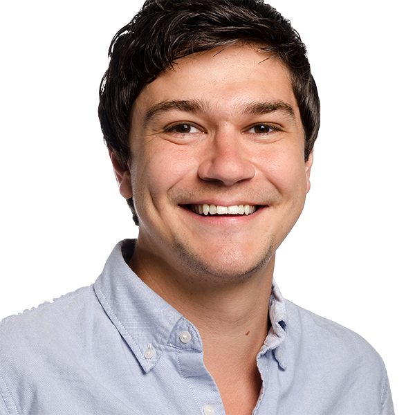
Phillip BardenAssociate Professor and Graduate Director, Biological SciencesEvolutionary biologypaleontologyecologyfunctional morphology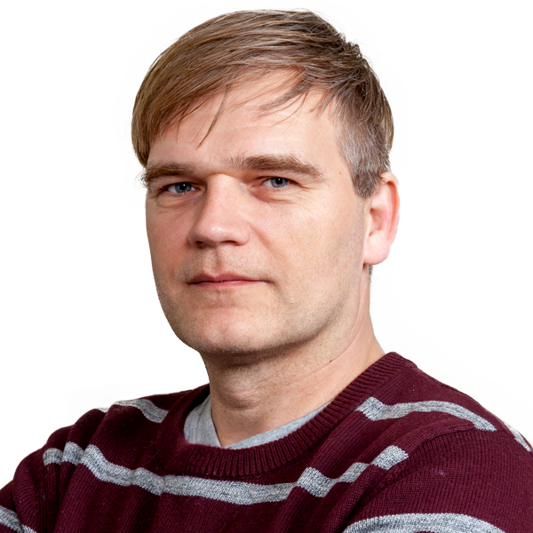
Dirk BucherProfessorneuromodulationneural codingCentral Pattern GeneratorsAxons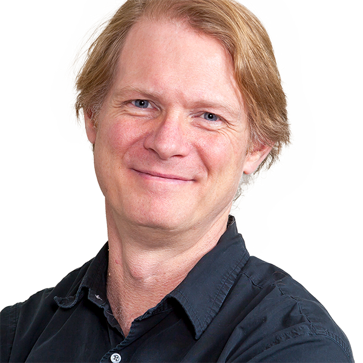
Daniel BunkerAssociate ProfessorGlobal change poses a strong challenge to ecologistsenvironmental scientistsecologyglobal changeDarshan DesaiDirector, NJIT Pre-Health Program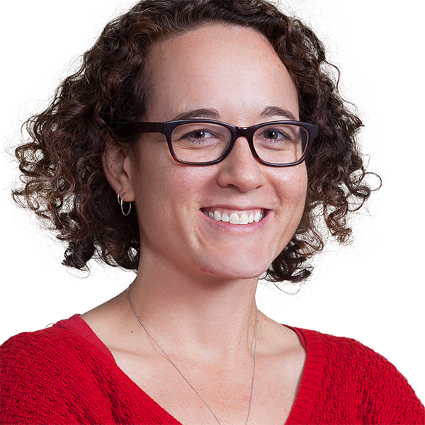
Caroline DevanSenior University LecturerUrban EcologyConservation BiologyAnimal BehaviorAllison EdgarAssistant Professor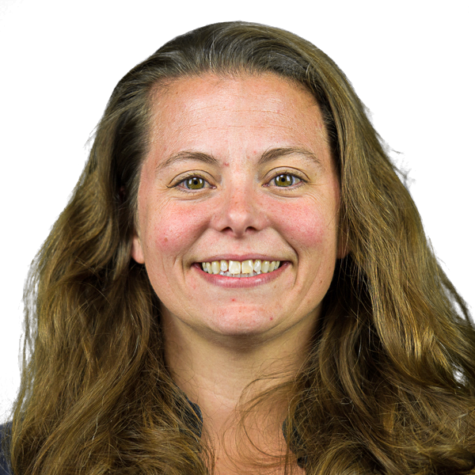
Brooke FlammangAssociate Professorbiomechanicsfunctional morphologyfluid mechanics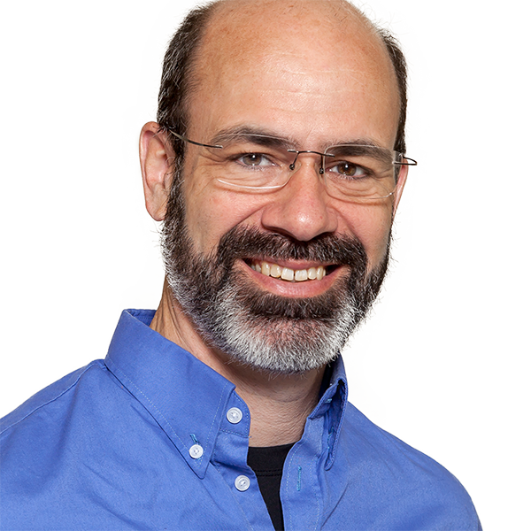
Eric FortuneAssociate ProfessorneuroethologySimon GarnierProfessorCollective Behavior and IntelligenceSwarm IntelligenceSwarm RoboticsSocial Behaviors Jorge GolowaschProfessor and Research Director, Biological Sciencesanalytical and quantitative analysis of electrical properties of neurons and networksneuromodulationcircadian activityglia-neuron interactions
Jorge GolowaschProfessor and Research Director, Biological Sciencesanalytical and quantitative analysis of electrical properties of neurons and networksneuromodulationcircadian activityglia-neuron interactions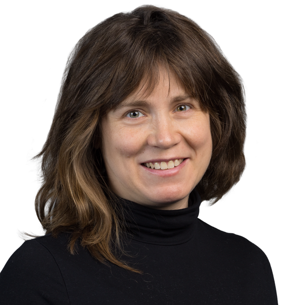
Julia Hyland BrunoAssistant Professorbirdsonganimal communicationvocal learning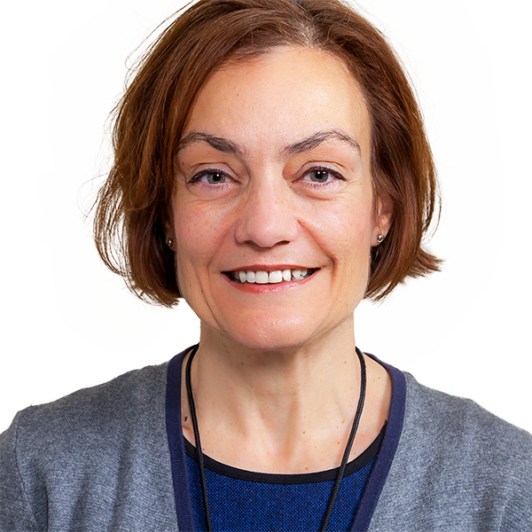
Mary KonsolakiSenior University LecturerFarzan NadimProfessorOscillations in the central nervous systemRhythmic motor activity and its neuromodulationNeurobiology of reward and addictionProfessor of Neurobiology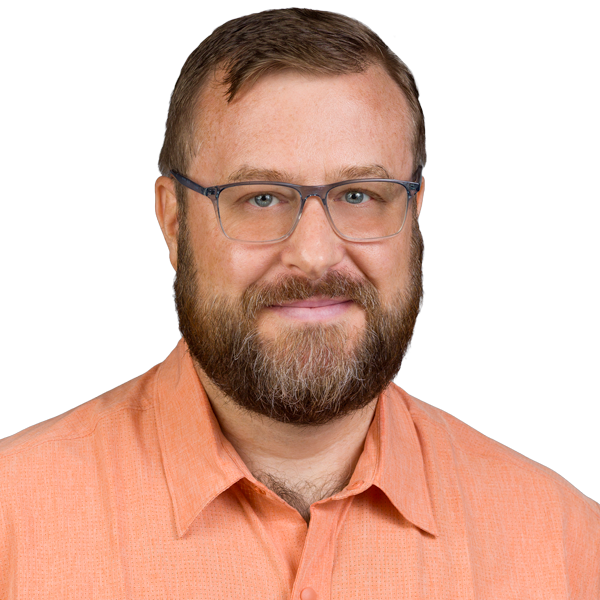
Michael NelsonUniversity Lecturer Horacio RotsteinProfessorMathematical and Computational Neurosciencedynamical systemsMathematical and Computational Biology and ChemistrySystems Biology
Horacio RotsteinProfessorMathematical and Computational Neurosciencedynamical systemsMathematical and Computational Biology and ChemistrySystems Biology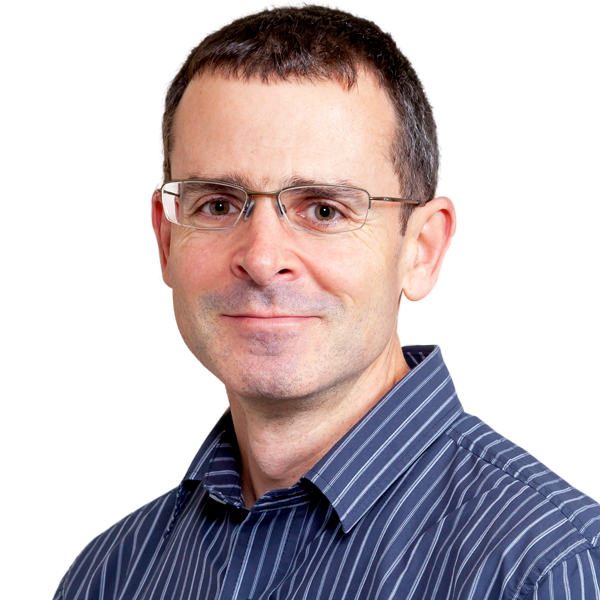
Gareth RussellAssociate Professor, Associate Chair and Undergraduate Director, Biological SciencesecologyConservation Biology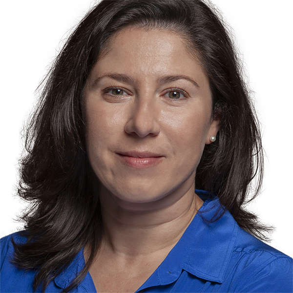
Kristen SeveriAssistant ProfessorLarval zebrafish swim to move around their environmentfind foodescape from predatorsneurobiology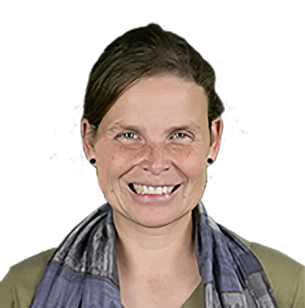
Daphne SoaresAssociate Professor and MS Program Advisor, Biological SciencesEvolution circuit development extreme-environments neuroecology neuroethology novelty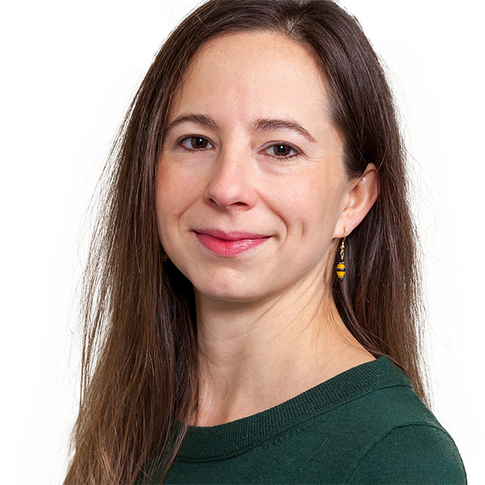
Maria StankoSenior University Lecturer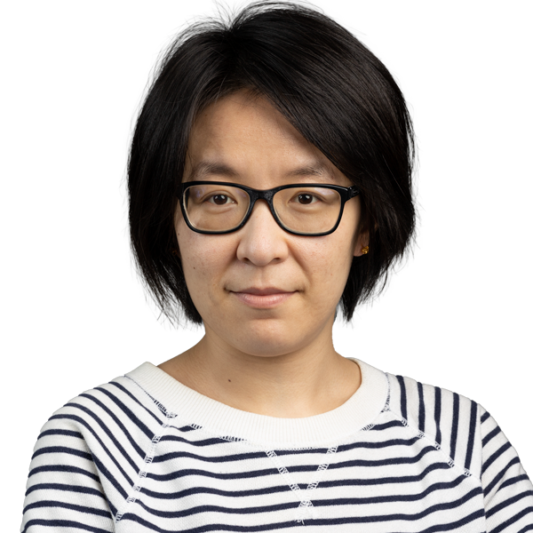
Xiaonan TaiAssistant ProfessorEcohydrologyForest mortality and disturbanceHydrologic and ecosystem modelingRemote Sensing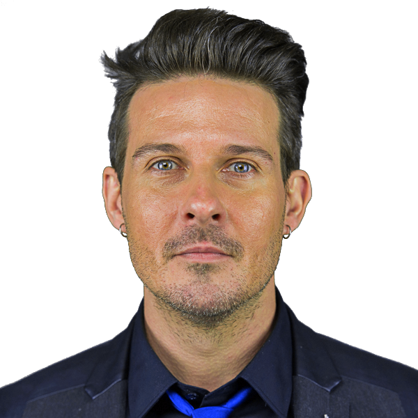
John YarotskySenior University LecturerProfessors
Dirk BucherProfessorneuromodulationneural codingCentral Pattern GeneratorsAxonsDarshan DesaiDirector, NJIT Pre-Health ProgramSimon GarnierProfessorCollective Behavior and IntelligenceSwarm IntelligenceSwarm RoboticsSocial BehaviorsJorge GolowaschProfessor and Research Director, Biological Sciencesanalytical and quantitative analysis of electrical properties of neurons and networksneuromodulationcircadian activityglia-neuron interactionsHoracio RotsteinProfessorMathematical and Computational Neurosciencedynamical systemsMathematical and Computational Biology and ChemistrySystems BiologyAssociate Professors
Phillip BardenAssociate Professor and Graduate Director, Biological SciencesEvolutionary biologypaleontologyecologyfunctional morphologyDaniel BunkerAssociate ProfessorGlobal change poses a strong challenge to ecologistsenvironmental scientistsecologyglobal changeBrooke FlammangAssociate Professorbiomechanicsfunctional morphologyfluid mechanicsEric FortuneAssociate ProfessorneuroethologyGareth RussellAssociate Professor, Associate Chair and Undergraduate Director, Biological SciencesecologyConservation BiologyDaphne SoaresAssociate Professor and MS Program Advisor, Biological SciencesEvolution circuit development extreme-environments neuroecology neuroethology noveltyAssistant Professors
Allison EdgarAssistant ProfessorJulia Hyland BrunoAssistant Professorbirdsonganimal communicationvocal learningKristen SeveriAssistant ProfessorLarval zebrafish swim to move around their environmentfind foodescape from predatorsneurobiologyXiaonan TaiAssistant ProfessorEcohydrologyForest mortality and disturbanceHydrologic and ecosystem modelingRemote SensingSenior Lecturers
Caroline DevanSenior University LecturerUrban EcologyConservation BiologyAnimal BehaviorMary KonsolakiSenior University LecturerMaria StankoSenior University LecturerJohn YarotskySenior University LecturerUniversity Lecturers
Michael NelsonUniversity LecturerNo faculty match “”.